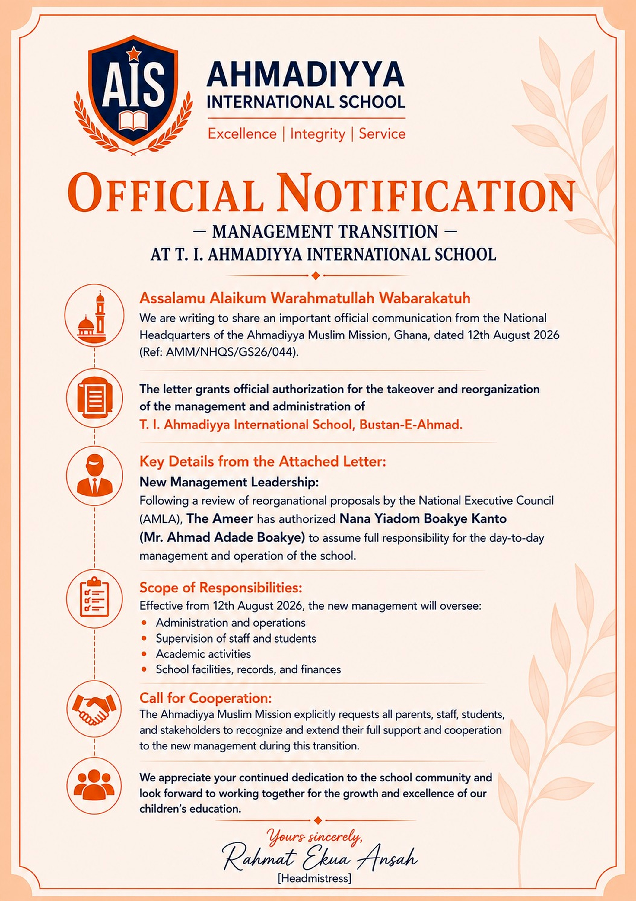

T.I. Ahmadiyya International School has received an official communication dated 12 August 2026 concerning the transition of the school's management and administration.
A new management responsibility
The official notification states that the letter from the National Headquarters of the Ahmadiyya Muslim Mission, Ghana, grants authorisation for the takeover and reorganisation of the management and administration of T.I. Ahmadiyya International School, Bustan-E-Ahmad.
Following a review of reorganisation proposals by the National Executive Council (AMLA), the Ameer has authorised Nana Yiadom Boakye Kanto (Mr. Ahmad Adade Boakye) to assume full responsibility for the day-to-day management and operation of the school.
Scope of responsibilities
Effective from 12 August 2026, the new management will oversee administration and operations, supervision of staff and students, academic activities, and the school's facilities, records and finances.
A call for cooperation
The communication calls on parents, staff, students and stakeholders to recognise and extend their full support and cooperation to the new management during the transition.
The school expresses appreciation for the continued dedication of its community and looks forward to working together for the growth and excellence of the children's education.